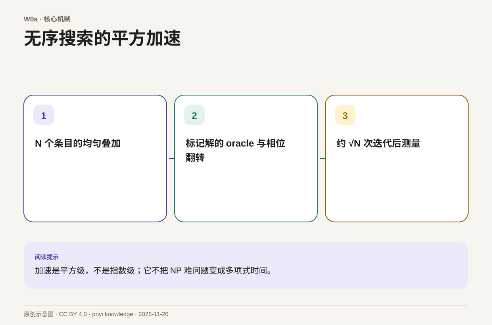
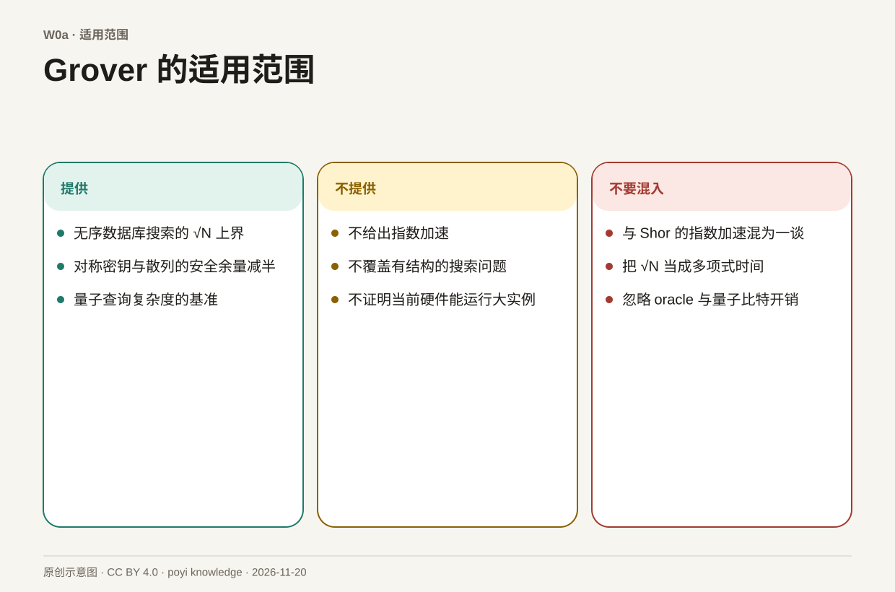

原理与机制
定理：格罗弗算法（Grover's Algorithm）。定理（格罗弗 1996 + BBBV 1997 + Zalka 1997）：在 N 个候选里找一个满足条件的项，量子算法需要 Θ(√N) 次查询，而且这已经是极限。
问题设定极简：N 条无序记录，其中恰好一条满足谓词 f，找出它。上界（格罗弗 1996）：存在一个量子算法，用 O(√N) 次 f 求值找到那个"标记项"，成功率可以做到任意接近 1。具体是 π/4·√N 次迭代，成功率约 1 − 1/N。下界（BBBV 1997）：任何量子算法，无论怎么设计，若只能通过查询 f 来获取信息，至少需要 Ω(√N) 次查询。注意量词：这是对所有量子算法、所有 f、所有成功概率要求成立的。
最优性（Zalka 1997）：格罗弗算法的 π/4·√N 次查询在"接近确定成功"的场景下是最优的，而且量子搜索不能获得比"把空间切给若干独立量子计算机"更好的并行化——这是量子与经典世界最反直觉的差别之一：经典暴力破解可以线性加机器，量子搜索不行。1.密钥搜索：暴力搜索 n 位密钥，从 2^n 次降到 2^(n/2) 次。2.哈希原像：找 n 位哈希的原像，同样从 2^n 降到 2^(n/2)。3.但碰撞搜索不在此列。 生日界的经典代价是 2^(n/2)；量子碰撞搜索有专门的算法（Brassard、Høyer 与 Tapp 1997），代价是 O((N/r)^(1/3))，对 n 位输出约 2^(n/3)。所以正确的说法是：格罗弗不砍生日界；量子碰撞强度降到 2^(n/3)，那是另一条算法的功劳。 这一条几乎每次都被说错。机制一句话：制备 N 个基态的均匀叠加，用预言机把满足条件的那一项的振幅取反，再关于平均值做一次反射把目标抬高，重复 π/4·√N 次，测量。注意预言机不是"读数据"，而是把"满足"这个判断变成一次可逆的幺正操作——这是整套算法能跑起来的技术核心。
更一般的形式是振幅放大（amplitude amplification）：任何有现成"好解标记"的问题都能套进这个循环。相位估计则给出另一个平方根加速——把精度从 1/ε 提到 1/√ε。这些才是后量子密码里格、哈希、签名方案做安全分析时真正用的工具。

为什么重要
因为它砍掉的只是指数的一半，而且下界证明告诉你这就是地板。量子威胁的完整叙事，必须由肖尔和格罗弗两条定理合起来才讲得完。
- 公钥密码：断崖。 肖尔把分解和离散对数从指数级压到多项式级——不是慢一点，是归零。RSA、ECC 一起完蛋。- 对称密码：台阶。 格罗弗把 2^n 砍到 2^(n/2)——只是砍半，而且下界证明说这就是极限。所以"量子计算机来了会怎样"的完整答案是：公钥密码必须换，对称密码必须加长位。 这解释了后量子密码迁移里所有看似奇怪的选择：为什么 NIST 不推荐任何低于 128 位经典强度的对称算法？为什么 ML-KEM-768 是 192 位经典、128 位量子？——因为公共部分必须扛住肖尔，私密部分只需要扛住格罗弗。格罗弗更深一层的意义是它给了可规划性。"128 位密钥将来不够用"这句话，从猜测变成了定理；而定理是可以排期的。下界证明（BBBV 与 Zalka）保证的是不会有更坏的意外：不存在"再过十年又冒出一个能把 2^(n/2) 再砍一半的量子搜索"。量子搜索的地板，是可以拿来签字的。
还要说清一件事：格罗弗是提醒，不是灾难。 2^128 次 AES-128 加密依然是大得没边的事。今天需要焦虑的不是格罗弗，而是"你的密钥派生用了 MD5""你的随机数没播种"这类实打实的漏洞——那些是今天的紧急伤，格罗弗是长期病。
应用与实例
格罗弗算法今天没有破过任何东西。它的主要用途是当尺子。
- 重新标注所有安全位数。 "AES-128 提供 128 位安全"这句话必须补一句"量子下 64 位"；"SHA-256 提供 128 位抗碰撞"在量子世界里要打折到约 2^85.3。"256 位对称密钥 = 128 位量子安全"这条线画出来之后，整个后量子时代的参数标准就定了。
- 决定后量子方案的参数。 FIPS 203/204/205 的参数档位都按"至少 128 位量子强度"来切；NIST IR 8547 明确写道：所有提供至少 128 位经典强度的 NIST 认可对称原语都被认为满足 Category 1，而 112 位强度的对称算法将在 2030 年被禁用。- 决定哈希函数的选型。 因为量子碰撞是 2^(n/3) 而不是 2^(n/2)，哈希签名方案 SPHINCS+（SLH-DSA）的输出要配到 128 位——它的量子抗碰撞强度只有约 2^42.7，只能靠参数堆量换安全。NIST 在 2026 年 4 月还发布了 SP 800-230 的初稿，给 SLH-DSA 补额外的参数集，理由正是受限场景下要权衡签名尺寸与安全位数。- 给"通用攻击"定天花板。 量子安全证明里普遍使用"量子随机预言机模型"，那就是把格罗弗当作所有黑盒搜索的统一模型来用。- 也提醒工程师别走错路。 一个用格罗弗砍半的威胁，和"你的 API 允许用户自定义 IV"这样的漏洞，根本不在一个量级。
边界与攻击面
格罗弗算法的攻击面不在数学里，在物理里。
- 深度才是杀手，不是量子比特数。 Grassl 等人 2016 年的资源估算：破 AES-128 约需 2953 个逻辑量子比特，但 T 深度约 2^80；AES-192 是 4449 个逻辑比特、T 深度 2^112；AES-256 是 6681 个逻辑比特、T 深度 2^144。量子比特数量看着不多，顺序步数是 2^80 量级——那是 10^24 次纠错门操作。- 哈希原像更狠。 Amy 等人 2016 年的估算：Grover 找 SHA-256 原像只需约 2^12.6（≈6200）个逻辑量子比特，却要跑约 2^153.8 个表面码周期。原像搜索是"便宜在比特、贵在时间"；密钥搜索则是"比特和时间都贵"。
- 不能靠堆机器。 Zalka 证明量子搜索无法获得比"把空间切给独立量子计算机"更好的并行化。经典暴力破解可以线性加机器，格罗弗不行。
- 噪声会直接杀死振幅放大。 格罗弗每一轮迭代都要在 2^128 维的叠加态上相干地跑一次完整的 AES-128，并重复 2^64 次。退相干会在远远早于 2^64 次之前毁掉叠加；纠错开销才是真正的账单。- 查询次数不等于墙钟时间。 把"判断一个候选密钥对不对"变成可逆的量子预言机，本身可能比搜索还费劲——尤其当密钥派生带结构时。- 下界的适用范围要说准。 BBBV 与 Zalka 的结论是黑盒搜索的界。如果攻击者能打你的实现（随机数、密钥派生、协议逻辑），他根本不需要格罗弗。格罗弗是最坏情况下的地板，不是最优的攻击。
- 它不碰生日界，这一点必须说清楚。 量子抗碰撞强度是 2^(n/3)（Brassard–Høyer–Tapp 1997），不是 2^(n/2)。把"Grover 把生日界减半"当成结论的，是把两件事搞混了。SHA-256 的量子抗碰撞强度约 2^85.3，SHA-512 约 2^170——都还撑得住。
- 还有现实约束：今天的机器（IBM 路线图 2029 年的 Starling 是 200 个逻辑比特、一亿个门；Google 路线图第六阶段是 2029 年前后约一百万物理比特）离"2^64 次相干的全 AES-128 运算"还差十几个数量级。

历史与背景
- 1996 年：Lov Grover 在 STOC 上发表《A Fast Quantum Mechanical Algorithm for Database Search》（212–219 页），次年在《Physical Review Letters》上以《Quantum Mechanics Helps in Searching for a Needle in a Haystack》再度发表，引起物理学界注意。这个思路在别处被独立发现过——Boyer、Brassard、Høyer 与 Tapp 在 1996 年就给出了自己的变体。一个流传很广的细节：量子计算界大约花了一年才真正注意到这篇论文。
- 1997 年：理论地基一次性补齐。BBBV（《Strengths and Weaknesses of Quantum Computing》，《SIAM Journal on Computing》26(5):1510–1523）证明 √N 的下界；Zalka 在《Physical Review A》证明格罗弗算法最优、且不可并行化；同年 Brassard、Høyer 与 Tapp 发表《Quantum Algorithm for the Collision Problem》，给出量子碰撞搜索的 2^(n/3) 结果。- 2016 年：Grassl 等人《On the Quantum Complexity of Breaking Symmetric Ciphers》第一次把"用量子破 AES 要多少资源"算清楚；Amy、Mosca 与 Nielsen 给出 SHA-256 原像的量子资源估算。- 2016–2024 年：后量子密码标准化。征集、评审、选型、标准化，每一步的参数门槛都以"肖尔威胁下的强度"和"格罗弗威胁下的强度"两条线来定。- 2024 年 8 月 13 日：FIPS 203/204/205 发布；同年 Google 演示低于阈值的量子纠错，把"纠错可行"从理论推到了硬件。- 2025–2026 年：量子硬件继续扩张（IBM Nighthawk 120 比特、跑 5000–7500 个门；IBM 路线图把首台容错机放在 2029 年、200 个逻辑比特）；SP 800-227 与 SP 800-230 把后量子参数进一步制度化。但格罗弗破 AES-128 需要 2^64 次相干的全 AES-128 运算——即便按最乐观的纠错开销估算，也是 10^19 次以上的预言机调用，差着十几个数量级。
逐步示例与核验
形式模型与复算步骤
[\Pr[\mathrm{Bad}_A(\lambda)]\le \varepsilon(\lambda)]
格罗弗算法的公开参数、密钥/随机数与消息；变量说明：Bad 为归约中定义的失败事件，ε 为可忽略函数。1.定义失败事件。2.构造归约把攻击者转成困难问题求解器。3.证明失败概率上界。边界：公式只覆盖已登记的参数与假设；参数取值、标准版本和实现细节仍以来源为准。
参考出处
- Wikipedia search entry for 格罗弗算法. https://zh.wikipedia.org/w/index.php?search=%E6%A0%BC%E7%BD%97%E5%BC%97%E7%AE%97%E6%B3%95
- Handbook of Applied Cryptography (Menezes, van Oorschot, Vanstone). https://www.cacr.math.uwaterloo.ca/hac/